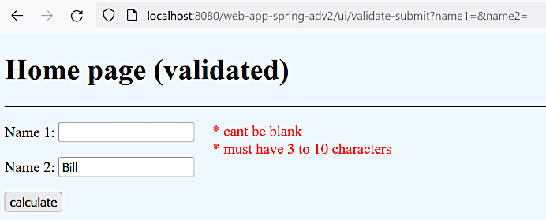

Form validation
Form validation
Form validation
Mar 27, 2023
[2.8]
Why we need a server side validation rather than client side one? If we add a simple validation
in JavaScript like this (see the home-page.jsp file):
<script type="text/javascript">
function validateUserName() {
if (document.getElementById("name1").value.length > 1) {
return true
} else {
alert("The user name must be at least 2 character long!")
return false
}
}
</script>
. . .
<form action="calculate-page-dto" method="GET" onsubmit="return validateUserName()">
. . .This validation rule will work but a user may easily break it using, e.g., a debugger tool in their browser.
So we need to perform validation on the server where users cannot manipulate the code.
Git commit:
ecc1819727ac509d8be35d521787c5e0b13b7953client-side validation
Bean validation API 2.0 (JSR-380) is used. The previous versions are JSR-303 and JSR-349. For more details about JCP see here. Also see [13].
The JSR-380 standard is supported by Spring starting from version 5.2.
We are going to use Hibernate validator, version 6.0+. See [14] for the implementations discovered so far.
For this demonstration we create separate artifacts:
ValidatedControllerUserInfoValidatedDto
(probably with not a good name)home-page-validated.jspNeed to add the following dependencies to the POM:
. . .
<dependency>
<groupId>javax.validation</groupId>
<artifactId>validation-api</artifactId>
<version>2.0.1.Final</version>
</dependency>
<dependency>
<groupId>org.hibernate</groupId>
<artifactId>hibernate-validator</artifactId>
<version>8.0.0.Final</version>
</dependency>
. . .The first one is just a set of interfaces. The second one is a concrete implementation (Hibernate). Without the later dependency validation will not work.
Note
@EnableWebMvc annotation must be activated on the configuration to activate validation,
see the MyApplicationConfig
class.
After validation is activated the following lines are output to the log when the server starts:
Mar 27, 2023 12:24:29 AM org.hibernate.validator.internal.util.Version <clinit>
INFO: HV000001: Hibernate Validator 6.1.6.FinalValidation rules are defined in the DTO:
. . .
@NotBlank(message = " * can't be blank")
@Length(min = 3, message = " * must have at least 3 characters")
private String name1;
. . .Note
See [13] for more validation rules like @Email, @Past, @Future etc.
The controller has the following controller methods:
. . .
@RequestMapping("/validate")
public String showHomePageSpring(@ModelAttribute("dto") UserInfoValidatedDto dto) {
return "home-page-validated";
}
@RequestMapping("/validate-submit")
public String showCalculatePageSpring(@Valid @ModelAttribute("dto") UserInfoValidatedDto dto,
BindingResult result) {
if (result.hasErrors()) {
result.getAllErrors().forEach(System.out::println);
return "home-page-validated";
}
return "result-page-spring";
}
. . .
The @Valid annotation states that the DTO must be valid according to the rules defined in it.
The BindingResult object provides access to the validation errors. Were in case of errors we
return the same form page preventing the next page to be shown. The debug print outputs
information like this:
Field error in object 'dto' on field 'name1': rejected value []; codes [Length.dto.name1,Length.name1,Length.java.lang.String,Length]; arguments [org.springframework.context.support.DefaultMessageSourceResolvable: codes [dto.name1,name1]; arguments []; default message [name1],2147483647,3]; default message [ * must have at least 3 characters]
Field error in object 'dto' on field 'name1': rejected value []; codes [NotBlank.dto.name1,NotBlank.name1,NotBlank.java.lang.String,NotBlank]; arguments [org.springframework.context.support.DefaultMessageSourceResolvable: codes [dto.name1,name1]; arguments []; default message [name1]]; default message [ * can't be blank]The JSP form looks like this:
. . .
<form:form action="validate-submit" method="GET" modelAttribute="dto">
<p><label for="name1">Name 1: </label><form:input id="name1" path="name1"/>
<form:errors path="name1"/></p>
<p><label for="name2">Name 2: </label><form:input id="name2" path="name2"/></p>
<input type="submit" value="calculate"/>
</form:form>
. . .The <form:errors path="name1"/> element outputs the list of errors (if any) for the specified
field.
Git commit:
764155fd65a55162d5e23e6501eb4cd1bdbc11edserver-side form validation implemented
The URL is http://localhost:8080/web-app-spring-adv2/ui/validate:

This snapshot was taken after the following styling is done.
The following commit makes the form look a little bit better.
Git commit:
bab5cc787395af429e3bad90239a3b6f2ee4264bform styling performed
The discussed approach is useful for avoiding expensive and time consuming interactions and calculations. Still this guarantees that the validation will be done even if the used breaks the validation rules in a browser. It's not going to be reproduced, see here to have the main idea of the solution.
Another checkbox "I am not a robot" added and the other input field is validated.
Git commit:
b5a88ff0cdb251e3f4480bd6fabba3c8cc7f440ffinal steps
If when using the @Size annotation we don't specify the message argument then the default
message, like "size must be between 3 and 10", will be used. Some hints about the way it works
may be found in the following files:
validation-api-2.0.1.Final.jar!/javax/validation/constraints/Size.class:13 see the
javax.validation.constraints.Size#message method definition;hibernate-validator-6.1.6.Final.jar!/org/hibernate/validator/ValidationMessages.properties:22
where the following property is defined:
javax.validation.constraints.Size.message = size must be between {min} and {max}As it's implemented this way, we can use parameters like {min} and {max} in our messages like this:
@Size(min = 3, max = 10, message = " * must have from {min} to {max} characters")Git commit:
2e827339401f29efb950b8ae912f46124d4dad9avalidation messages customization investigated
Mar 27, 2023
[2.10]
Note
This part of development is being done after some additional fields ("Age", "Email", "Phone") are added to the registration form. See here.
So far we used the Hibernate implementation of validators (also see here). Now we are going to implement our custom validator constraint.
First implement a simpler @AgeValidator. Existing validators code is investigated in this part
of the video. The coding itself is going to be started after the following time stamp.
Creating the @Age
annotation:
@Documented
@Retention(RetentionPolicy.RUNTIME)
@Target(ElementType.FIELD)
@Constraint(validatedBy = AgeValidator.class)
public @interface Age {
String message() default "Age should be between {lower}-{upper}";
int lower() default 18;
int upper() default 60;
java.lang.Class<?>[] groups() default {};
java.lang.Class<? extends javax.validation.Payload>[] payload() default {};
}The groups() and payload() fields are copied from the existing
@javax.validation.constraints.NotBlank annotation.
Creating the AgeValidator
validator class:
public class AgeValidator implements ConstraintValidator<Age, Integer> {
private int lower;
private int upper;
@Override
public boolean isValid(Integer age, ConstraintValidatorContext constraintValidatorContext) {
return age != null && age >= this.lower && age <= this.upper;
}
@Override
public void initialize(Age age) {
this.lower = age.lower();
this.upper = age.upper();
}
}In the RegistrationDto
DTO class adding the newly created annotation to the field age:
. . .
@Age(lower = 20, upper = 70, message = "should be between {lower} and {upper}")
private Integer age;
. . .As the ConstraintValidator interface cannot accept primitive type parameters, changing the age
field type from int to Integer.
Editing the RegistrationController
corresponding controller method:
@RequestMapping("/registration-success")
public String processUserRegistration(@Valid @ModelAttribute("userReg") RegistrationDto userReg,
BindingResult result) {
if (result.hasErrors()) {
return "registration-page";
}
return "registration-success";
}
}Updating the registration-page.jsp
view to make it show the error messages:
</p><label for="age">Age: </label><form:input id="age" path="age"/>
<form:errors path="age" cssClass="error"/></p>By the URL http://localhost:8080/web-app-spring-adv2/ui/register we can confirm that the "Age" field is validated.
Git commit:
b0c9041b5224fdc73eb96b051423520f80bc0dafcustom validator is applied to the "Age" field
Here the error message is going to be defined in a *.properties file.
In the @Age
annotation we redefine the message like this:
. . .
String message() default "{invalidAgeMessage}";
. . .Then creating the messages.properties file inside the
src/main/resources directory:
invalidAgeMessage=age should be between {lower} and {upper}Note
See here for more details about placeholders usage.
In the Spring MVC configuration class MyApplicationConfig
adding the following code:
. . .
public MessageSource messageSource() {
ResourceBundleMessageSource messageSource = new ResourceBundleMessageSource();
messageSource.setBasenames("messages");
return messageSource;
}
public LocalValidatorFactoryBean validator() {
LocalValidatorFactoryBean localValidatorFactoryBean = new LocalValidatorFactoryBean();
localValidatorFactoryBean.setValidationMessageSource(messageSource());
return localValidatorFactoryBean;
}
. . .
@Override
public Validator getValidator() {
return validator();
}
. . .The method getValidator() overwrites the corresponding method of the WebMvcConfigurer interface.
There's not much explanation about this code, just can confirm it works.
Important
The @Bean annotation must be added to the messageSource() method. Its absence will cause
problems in the future.
In the RegistrationDto
DTO class removing the explicit message to check that the default message is used:
. . .
@Age(lower = 20, upper = 70)
private Integer age;
. . .Git commit:
15f922dd56577e9eb093a97741e7ea85c3f02d33error message externalized
Mar 28, 2023
Note
This part is described not in the order it has in the original course.
The requirements are going to be fulfilled about the "User name" field:
Creating a validator class UserNameValidator:
public class UserNameValidator implements Validator {
@Override
public boolean supports(Class<?> clazz) {
return RegistrationDto.class.equals(clazz);
}
@Override
public void validate(Object target, Errors errors) {
ValidationUtils.rejectIfEmptyOrWhitespace(errors, "userName",
"userName.empty", "User name should not be empty");
String userName = ((RegistrationDto) target).getUserName();
if (!userName.contains("_")) {
errors.rejectValue("userName", "userName.invalidString",
"User name should contain an underscore (_)");
}
}
}The implemented interface is org.springframework.validation.Validator.
The supports() method decides whether the DTO object must be validated by this validator.
The validator is added in the RegistrationController:
. . .
@InitBinder
public void initBinder(WebDataBinder dataBinder) {
. . .
dataBinder.addValidators(new UserNameValidator());
}
. . .The URL is http://localhost:8080/web-app-spring-adv2/ui/register.
Git commit:
781dcbe7466b52bbd9d9dabe4889b32929d9ddc5Spring framawork validator used
Here we add another validator that checks that the email ends with some certain text.
The coding part is pretty much the same as it was before, just several things must be pointed out.
The new EmailValidator:
. . .
@Override
public void validate(Object target, Errors errors) {
ValidationUtils.rejectIfEmptyOrWhitespace(errors, "communicationDto.email", "email.empty");
String email = ((RegistrationDto) target).getCommunicationDto().getEmail();
if (!email.endsWith("@certain-domain.com")) {
errors.rejectValue("communicationDto.email", "email.invalidDomain");
}
}
. . .The difference is that the error messages are omitted, they will be taken from the properties file
messages.properties.
The URL is the same — http://localhost:8080/web-app-spring-adv2/ui/register.
Git commit:
bc802fbeb9cbf98f3ecb75a7ac02931e5bf118a8properties file used for error messages
Comment out the line
// dataBinder.addValidators(new EmailValidator());in the @InitBinder annotated method in the RegistrationController.
Add the following call to the corresponding controller method:
EmailValidator emailValidator = new EmailValidator();
emailValidator.validate(userReg, result);Git commit:
8174ad083bc415c0f7870bdc91d0019e299a564femail validator used manually
To avoid creating the validator object on every request make the EmailValidator
a component (with the @Component annotation) and add the autowired field to the controller class:
@Autowired
private EmailValidator emailValidator;Also need to update the component scan base package list in the configuration class
MyApplicationConfig:
@ComponentScan(basePackages = {"springmvcstudy2.controllers", "springmvcstudy2.validators"})The both above variations work as before. The URL is http://localhost:8080/web-app-spring-adv2/ui/register.
Git commit:
59d483e0ce7dbc6efce6e5c50ac59b2f9b5909e9email validator used manually (with autowiring)
Placeholders may be defined in property files and used inside messages in the validation annotations.
In the messages.properties file making the
following changes:
invalidAgeMessage={0} should be between {1} and {2}
. . .
should_not_be_blank=Field ''{0}'' SHOULD NOT BE BLANK
age=USER AGEIn the RegistrationDto
using this property via a placeholder:
@NotEmpty(message = "{should_not_be_blank}")
private String name;So the result is:
Important
The numbered message argument placeholders are sorted by their names, e.g. an argument named "max" precedes an argument named "min".
The URL is http://localhost:8080/web-app-spring-adv2/ui/register.
Git commit:
606c127f52ba035e593edec8ec60f20552916595placeholders used
If we input a random string into the "Age" field on the registration form we well see the error message like this: Failed to convert property value of type java.lang.String to required type java.lang.Integer for property age; nested exception is java.lang.NumberFormatException: For input string: "rtrtrt". This is definitely not good for the users.
The server log will show the following output:
VALIDATION: registration form has errors:
Field error in object 'userReg' on field 'age': rejected value [rrtr]; codes [typeMismatch.userReg.age,typeMismatch.age,typeMismatch.java.lang.Integer,typeMismatch]; arguments [org.springframework.context.support.DefaultMessageSourceResolvable: codes [userReg.age,age]; arguments []; default message [age]]; default message [Failed to convert property value of type 'java.lang.String' to required type 'java.lang.Integer' for property 'age'; nested exception is java.lang.NumberFormatException: For input string: "rrtr"]As we can see some codes are listed in the above message so we are adding the following
property into our properties file messages.properties:
typeMismatch.java.lang.Integer=Field {0} should be a valid numberAs the result, the message now is: Field USER AGE should be a valid number, that is much more polite to the users.
The URL is http://localhost:8080/web-app-spring-adv2/ui/register.
Git commit:
7d5cffdb51061f794a6a69b550da9e806ba4ae00type mismatch problem handled